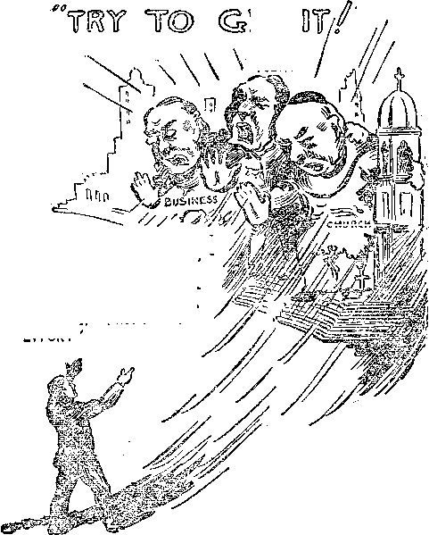

A JOURNAL OF FACT HOPE AND COURAGE
THE ULTIMATE BUSINESS
WHEN THE WORLD
WENT MAD
FERRETINGS
THE BACCALAUREATE
SUNDAY CANVASSING
SLANDERING GOD
radio lecture by Judge Rutherford
EVERY OTHER WEDNESDAY
5c a copy - $1.00 a year - Canada & Foreign $ 1.50
Volume XI- No. 280
June 11, 193 0
LABOR AND ECONOMICS
Sunday Canvassing . . . . . 606
Low Wages in Cotton Industry 585
High-salaried Men Jobless . . 586
New York’s Old Ase Pension Bill 589
SOCIAL AND EDUCATIONAL
AGRICULTURE AND HUSBANDRY
Brazil Is Sowing Wheat . . 585
Droughts in Armenia and South
Africa........585
Ferretings..... 585
China’s New Language . . . 585
The Wall of Ur of the Chaldees 587
Cost of World War to America 589
When the World Went Mad . 591
The Glory that Was the
Baccalaurate......5-96
Young and Old (Poem) . . . 598
FINANCE—COMMERCE—TRANSPORTATION
New York State Milk Producers 586
SCIENCE AND INVENTION
Two-Way Television Telephone 585
Human Nerves as Electric 'Wires 586
The Lindbergh Light . . . 586
Universe in the Making . . . 587
Radio Wave Bore Telephone Message ........607
Heading Toward the Ultimate
Business........579
Canadian National Fastest Train 586
Wanted—An Honest Monetary
Unit ..... 590
The Grip of the House of Morgan 590
HOME AND HEALTH
Aluminum Evidence Piling Up 584
Cigarette Smoking Shortens Life 587
Acrobats and Chiropractic . 588
The A. M. A. Committee on Foods 590
POLITICAI.—DOMESTIC AND FOREIGN
RELIGION AND PHILOSOPHY
A Waterfall; Your Servant or
Your Master ......598
Dope Fiends in Prison . . . 600
Why Revivals Are Harmful . 589
A Question and Answer . . . 599
Slandering God......601
Published every other Wednesday at 117 Adams Street, Brooklyn, N. Y., IT. S. A., by WOODWORTH, KNORR & MARTIN
Copartners and Proprietors Address: 117 Adams Street^ Brooklyn, N. Y., U. S. A, CLAYTON J. WOODWORTH .. Editor ROBERT J. MARTIN .. Business Manager NATHAN II. KNORR.. Secretary and Treasurer
Five Cents a Copy—$1.00 A Year, Make Remittances to THE GOLDEN AGE Notice to Subscribers: We do not, as a rule, send an acknowledgment of a renewal or a new subscription. A renewal blank (carrying notice of expiration) is sent with the Journal one month before the subscription expires. Change of address, when requested, jnay be expected to appear on address label within one month.
The Golden Age is published in six languages: English, Finnish, German, Nois tvegian, Polish, and Swedish. -
Foreign Offices
British ............ . 34 Craven Terraco, London, W. 2, England
Canadian ......_.....40 Irwin Avenue, Toronto 5, Ontario, Canada
Australasian . . 7 Beresford Rd., Strathfield, Sydney, N. S. W., Australia South Africa.......... . 6 Lelie Street, Cape Town, South Africa
Entered as second-class matter at Brooklyn, XL Y., under the Act of March 3, 1879..
Volume XI Brooklyn, N. Y., Wednesday, June 11, 1930 Number 280
Heading Toward the Ultimate Business
EVERYBODY can see that the world is headed toward the ultimate business, the time when there -will be but one enterprise beneath the sun, and all the people in the world will be working for some one directing head. Just now it looks to many people as if J. P. Morgan would be the directing head, but such will not be the case. The head of the ultimate concern will be Christ.
The word “business” is just another word for the expression of ‘making a living’. A man in the banking business is making a living by loaning out at interest the money of other people. A man in the medical business is making a living by prescribing for the ills of his fellows. A man in the clergy business is making a living by preying on the fears of his neighbors, and so on down the line. Financial remuneration, the chance to make a living, is what keeps every business beneath the sun running.
The early part of the year 1929 was a period of mergers of big business never before equaled in the history of man. This was halted for a time by the stock market collapse in the fall of the year, but is under way again and will logically continue until everything that yields a profit is under one management.
As our civilization becomes more and more complex there are more and more kinds of business listed in the Donnelley Red Book (classified telephone directory). In the last issue there were 4,338 kinds of business listed, an addition of about two hundred in one year. But whatever the business may be, it has to have money to run, and it yields a living for those in it.
The world-wide ups and downs of business are almost as regular as the clock. In the close of the year 1893 business was in bad condition in the United States, England, France, Germany, Sweden, Netherlands, Italy, Argentina, Brazil, Canada, Australia, India, Japan and China, and good only in South Africa and Rus
sia. Four years later it was in good shape , in all these countries except Brazil, South Africa, Japan, and China. .
There was a like depression and a like recovery every seven years thereafter, the depressions coming at the close of 1900,1907,1914 and 1921. The one due at the close of 1928 was a few months late in coming, but it came also. In the United States business men figure on a little panic all their own every year of a presidential election, but it does not amount to much except when it happens to coincide with one of the seven-year spasms such as that recently had.
Trust-Busting Is Ended
A generation or so ago the people were terrified when they contemplated all the business of the country getting into the hands of one man; but they can get accustomed to anything, and from the time that the government decided that there are good monopolies and bad monopolies, that ended trust-busting. The U. S. government is now confessedly and openly friendly to Big Business. Hence agreements, institutes, associations, trusts and mergers galore.
So certain are the lawyers that the government will not interfere and does not wish to interfere with the tendency of all business to unite under one head that they are even bringing back together what the government once pried apart and are almost guaranteeing that there will be no further trouble.
Proposals have been made, and perhaps by now are enacted, by which business can reassure itself in advance that its proposed mergers will not be interfered with. About all the government asks is that it shall not be in restraint of trade. Mergers are most active when profits are highest.
In the year 1928 the most profitable enterprises, in the order of percentage of net profit after taxes were paid, were transportation and utilities, banking and insurance, stone, clay and glass, chemicals, rubber goods, metal and metal products, printing and publishing, paper pulp; all of these were very high.
At the other end of the scale, the poorest business of all was agriculture; after which, came the retail-wholesale trade, leather and products, food, beverages and tobacco, and textiles. In between were mining, construction, amusements, hotels, professional, lumber and wood.
Business Men Becoming Extinct
The independent business man is becoming extinct. The old-time Yankee who had his own little business will soon be a thing of the past. This is inevitable. It can be seen with the eye and can be demonstrated to anybody who has a thinking mind. The world is automatically headed toward one directing head for its enterprises. Let us see.
Mass production and mass distribution are not coming; they are here. There is a surplus of brick, mortar, machines, equipment and (alas!) of men. To cope with the giants already in the field the small must associate themselves together. The huge cost of selling goods must be cut down by joining selling organizations. One or two men can no longer direct production, sales, merchandising, styles, finance, advertising, etc. Instalment selling has created a new financial world all by itself. The bank wants a hand in everything, and on the least provocation wants the whole thing.
But the best proof that the old-style business man is becoming extinct is that that is just what is happening. Out of 430,072 corporations making returns in 1927, a deficit -was reported by 177,738. These are the small corporations. They can no longer compete with the large ones. They can not sell in large quantities at small profits, and hence can not stay in the game.
There are now in the United States 65,000 fewer business concerns than there were at the turn of the century. Three auto companies now divide eighty percent of the business and another half dozen most of the remainder. Commercial failures during 1928 were 23,930.
The Government Quite Helpless
United States Senator Sackett has pointed out that the government itself is quite helpless to control certain types of mergers that have come about since the World War. These mergers, 'which are purely financial, and not at all operative, practically nullify the Sherman antitrust law.
Today an industrial holding company buys the stock of competing industries sufficiently to become the dominant factor in each one. The one thing that it is after is profit. It has no interest whatever in the employees, and certainly none in the public. It is not operating companies; it is merely playing with profits made by companies. By this method there is nothing whatever to prevent an investment company from really controlling any number of industries in the same line of work or in different lines.
Sensing what is going on, The Literary Digest last summer made the following observation: “On one day last week a reader of the New York morning papers scanning the financial pages found these headlines meeting his eye: ‘New Morgan Food Stock Leads Curb’; ‘Morgan Utilities Spread in South’; ‘Bank Reports Show ■ Effects of Mergers’; - ‘Department of Justice Officials Considering Methods in Regard to Mergers’; ‘Boston and Maine Would Absorb Bangor Road.’ ”
Few Sainted Plutocrats
A favorite argument in behalf of business mergers is that the modern trust is a good trust, while the old trust was crude and brutal. The Literary Digest, patron saint of plutocracy, says ingratiatingly, “Instead of buying out its competitors at fair and sometimes fancy prices, it preferred to knock them out with a club.” We merely add that a competitor that is “out” is “out”.
Then Commerce and Finance says (and we have to laugh): “We are behaving more like human beings in our relations with each other. We must give a. place in our business calculations to a growing sense of a beauty—a fitness —of attitude (which we call ethics), as well as to the growing esthetic sense. Notice the codes of ethics which have been developed and adopted by industry after industry during the past decade.” The man who wrote that probably had his tongue in his cheek as he wrote it.
Of course, Commerce and Finance goes on to talk about the man of long ago. He wTas hard on his employees, he lied in his advertising, he was “for himself and the devil take the hind-
most”, he drove hard bargains, he sold sanded sugar; but now we have outgrown all that. Yes, we have. Teapot Dome!
Then there is E. A. Filene, president of 'William Filene and Sons Company of Boston. He sees mass production and high wages leading to greater leisure for the masses. He forgot to say that about five million of them have that leisure right now, and nothing else worth speaking of. But he evidently thinks there is a vast difference between what he terms the ‘old capitalism’ and the ‘new capitalism’. If that be so, when did this change of heart occur?
And then there is the United States Chamber of Commerce, which has gone on record as denouncing ‘all those who indulge in commercial and political corruption’. That is good. Let’s see. Can we remember hack a little way? Why, yes. There was President Harding’s cabinet. And who were in it? Oh, there was Mr. Daugherty, and Mr. Fall, and Mr. Hughes, and Mr. Coolidge. And outside of it there was Mr. Sinclair, and Mr. Stewart, and Mr. Hays.
Human Nature Not Changed
Human nature has not changed any since the days of Mr. Harding. A writer in the New York Times says that business men have confessed to him that they are brutes in business and get along by bluffing and blustering. The writer names six qualifications for business success without which success can not be had:
(1) Outwitting and overmastering competitors, employees and associates.
(2) Driving shrewd, hard bargains.
(3) Buying low and selling high, involving sharp practices and trickery.
(4) A close-fisted and cruel labor policy.
(5) Ability to sell one’s stock to friends and strangers.
(6) Bluffing and tricking banks into lending money.
If the Times correspondent is correct, then we should find these traits specially predominant in millionaires, and they are not traits that appeal to everybody. The number of millionaires in this country at the end of 1929 is four times what it was in 1922. Probably the men are the same now as they 'were then. Have they changed? We doubt it. If they have dropped the club for the garrote it is because their lawyers have shown them that the garrote is a safer instrument. A dangerous man is a dangerous man anywhere.
Some are alarmed over the mergers. In an Independence Day address Governor Roosevelt of New York said: “Centralized industrial control and big business combines menace the nation. Independence in business is a thing of the past. The influence of these huge trusts, with their almost unlimited resources, will be felt in this country at a not far distant date.”
What About Those Displaced?
Mr. B. C. Forbes is a very intelligent apostle of Big Business and in his magazine he tries to write comfortingly and consolingly about these mergers, but it is a hard job to do. He tries to tell us that adaptation is the life of business, that change is the eternal law, and we should enjoy being on top today and thrown into the discard tomorrow; but he writes unconvincingly when he tries to tell us that it is a good thing to have your business taken away from you so that you will have to go into something else in which to make a living.
The Literary Digest says: “Men must obey the strict rules of the system—rules which they have had no voice in making. Independence exists, but only at the top. However conducive such a scheme may be to industrial efficiency, it has little of the democracy of the system which it is supplanting. Individualism is thus yielding to something closely akin to institutionalism. Ability to forge ahead has become less dependent on personal initiative and more on one’s ability to fit into a certain place in an elaborate machine.”
If writing the foregoing any other author would have used the word “socialism” 'where The Literary Digest says “institutionalism”, but the Digest does not like to come right out and say that the trusts are heading mankind for socialism and already have them a long way into it.
The big mergers are finding it hard to keep down the individuality of their employees, and the men themselves are finding it just as hard. The man that used to be at the head of a small business enterprise is now a salaried employee of a huge corporation, and he does not like his job. He rebels at discipline and would far rather be independent, but he cannot be. He soon becomes a target for the young men just out of college and falls lower or out altogether. All mergers have more men than they know what to do with, and when a man gets sore out he goes.
The Trustification of Europe
The trustification of business is spreading from America all over the world. Britain complains that America is buying up British industry at the rate of millions of pounds every month. 'We can well believe this to be true. Some of the most prominent British motor concerns are now merely subsidiaries of American companies.
In Europe a trust is called a cartel. A production cartel aims at the joint control of production; a selling cartel handles the output of all the plants; a price cartel is what its name implies. The cartel is hampered by tariff walls, but manages to keep the business in the hands of the big fellows and to crush out the little ones, the object of all trusts.
The principal cartels in Europe are:
|
Aluminum |
Linoleum |
|
Borax |
Mouth organs |
|
Bottles |
Plate glass |
|
Carbide of calcium |
Potash |
|
Chemicals |
Rayon |
|
Copper |
Screws |
|
Cuckoo clocks |
Steel |
|
Enamel ware |
Steel rails |
|
Glue |
Wire |
|
Incandescent lamps Iron tubes |
Zinc |
The United States is interested in the aluminum, borax, electric lamp, steel rail, and zinc cartels. In rayon, though it is the world’s largest producer, more than half its product is produced by a subsidiary of a British Company. The European rayon cartel is a world monopoly. Germany is a member of every cartel of importance. The German cartel court is now seven years old, formed for the protection of the public. In France it is no offense to maintain prices, but it is an offense to raise them. Italy had 150 mergers of corporations in 1928. South America is trying to keep down trustification by prohibiting the use of loose-leaf systems of accounting. Some South American countries require that every sheet of every ledger be stamped by a government official before the book can be legally used for entries.
The Supreme Court of the United States has decided, in the case of the Mexican sisal monopoly, that a foreign trust can be controlled in its dealings in an essential raw material. It held that, even though domiciled abroad, it was in restraint of trade, and hence its activities here were forbidden.
Trusts in the United States
When it comes to trusts in the United States, there are so many of them, and they are forming so rapidly, that one feels confused to know where to start even the naming of them. What will you have first, shellacs and gums, paper boxes, paint, chinaware, hotels, shoe polish, refining sugar, typewriters, cleaning powders, tobacco, cigars, safety razors? Their name is legion.
The wave of bank mergers that swept over the United States in 1928 and 1929 alarmed some of the most intelligent men in the country. But there is no need to be frightened. Nothing can stop this. The G-uaranty Trust Company and the National Bank of Commerce were both colossal banks; now they are one, with resources of about $2,000,000,000. If the merged banks take over the Equitable Trust Company, as now planned, the resources will be more than $2,700,000,000, making it incomparably the biggest bank in the world. The Chase National Bank and the National Park Bank were merged, giving them the largest capital funds and ranking second in resources. The Chemical National and the United States Mortgage Company macle a $400,000,000 merger. The Farmers Loan and Trust Company went in with the National City Bank, the Hanover National Bank with the Central Union Trust Company, and Blair & Company with the Bank of America National Association.
These things sound like empty words to most of us, but they are far from it. They mean that thousands of men lose their positions or are degraded. in rank, and that the grip on other industries is tightened by the few who hold the reins. There were more than a hundred banking mergers in the United States in the first quarter of 1929.
"When the smaller bank is absorbed by the larger one the small business man who was an important customer of the small bank is nothing at all in the big one. The favors he could previously ask and expect to receive may not be his. The man he used to know is in an inferior and uninfluential job. The big merger is the friend of the big business that will take in him and his business as its next meal. Credit is the life of business.
The Giants Fight One Another '
In their fights to take over everything worth having, the giants frequently become embattled with one another. One of the most recent fights is over the Youngstown Sheet and Tube Company. At last accounts it was a three-cornered fight. The Tube Company wished to retain its independence, but was in imminent danger of being swallowed either by the Bethlehem Steel Company or the Republic Iron and Steel group. Whichever way it goes, the Tube Company will make its ally the second in power in the steel business in the United States, and the one that does not get it will be third. The Steel Trust (United States Steel Corporation) would still retain first place. The Du Pont Powder Corporation is linked up with the General Motors Corporation and with the Steel Trust.
The Standard Oil Company, once supposed to be such a very, very bad trust, is now one of the very, very good ones, it seems. In fact, it feels so sure of its present piety and ability to take care of itself at Washington that the Standard Oil Company of New York and the Vacuum Oil Company, forcibly separated by the government a generation ago, have now once more fallen on each other's neck and in each other’s lap, kissed and made up, and become one. A similar thing happened out West, where the Standard Oil Company of Indiana (once fined $29,000,000 for being such a bad trust, which fine it never paid) was united in marriage to the Pan-American Petroleum and Transport Company.
The seventeen steamship companies on the Great Lakes have been or soon will be gobbled up by one huge company. The National Tire Dealers Association is expected to take over a great chain of retail tire stores. The Radio Corporation of America has swallowed up two theater circuits, Keith and Orpheuin.
Public Utilities and Education
That makes a good headline. The two things seem naturally to go together. The Public Utilities have been feeding the American people with the idea that they will be ruined and destroyed as a people if they jointly own anything at all. The better way is to let the Power Trust have it all. Then a few men can look after it, charge what they like, and the public can be blessed—Vanderbilt-wise.
It was only recently that the public stirred uneasily in their sleep when they discovered that a branch of the Power Trust was buying-up newspapers right and left, and in addition to supplying college professors was furnishing textbooks to students which carefully twisted the minds of youth so that when they reached maturity they would be unable to reason sanely.
The Power Trust has practically completed its job of buying up the electrical industries of the world. The motion picture business was until recently largely in the hands of William Fox. The churches are coming together and the church and drama association is working on a scheme to make every church a playhouse and to do away with the clergy altogether by putting-on traveling speaking and singing entertainments called church services. These birds had better have paid attention years ago when we first began talking to them about stocking up with alarm clocks and overalls and working up callouses on their hands. They are likely to need all these at any moment now.
Consolidations of Stores
The United Stores Corporation has taken over the United Cigar Stores Company, the Union Tobacco Company, and the Tobacco Products Corporation. We remember, years ago, when they were expressly forbidden by the courts to do anything of the sort. But anything goes now.
One third of the retailers in all lines are now standing with their backs to the wTall and will be the next to go. The facts show that they are taking in an average of less than $8 a day; and they can not get enough out of that to keep going. Moreover, canvassing among these storekeepers, they admit that they are at the end of the rope.
The consolidation of the Sears Roebuck Company, with its 300 stores and immense mail order business, with the J. C. Penney Company,;' with its 1200 stores, brings into the merchandising field a concern that has an outlet of $625,- ■ 000,000 a year. How can a small merchant buy in competition with such a colossus ? There are 328 chain drug organizations in the country, operating 2,725 stores. A department store merger in New York, with branches in Brooklyn, Boston and Columbus, has annual sales of $106,000,000.
A Food Combine Coming
The time is at the door when there will be- a food combine. Many see it coming. One grocery chain, the A & P, has over 15,000 stores. New York city has already had a delicatessen trust of 226 stores. The old-time independent grocer is passing. His average business life now is only four years.
A step toward the food combine was the merger of the Hershey, Kraft-Phenix and Colgate companies, with assets of $125,000,000. Another is the Standard Brands, Ine., which controls Fleischmann Co., Royal Baking Powder and the E. W. Gillett Company, Limited, of Canada.
The Postum Company has absorbed the Jello Company, Iglehart Brothers, the Minute Tapioca Co., Walter Baker & Company, the Franklin. Baker Company, the Log Cabin Products Company, Richard Hellmann, the Cheek-Neal Coffee Company, La France Mfg. Company, the Calumet Baking Powder Company and the Certo Company. This combination covers a very wide range of table necessities and luxuries.
Britain has been going through a similar combination of food interests. Lever Brothers, Ltd., and the Margarine Union, Ltd., have combined, and the Home and Colonial Stores, Ltd., has taken over 1,500 stores and entered into a management agreement with the Meadow Dairy Co., Liptons, Ltd., Pearks Dairies, Boughs, Ltd., Sherry’s Dairy Co. and Neales Tea Stores. In the United States there is serious discussion of a national union of wholesale grocers into one great food combine.
Babson, the statistician, who so clearly forecast the panic of 1929, declares that henceforth farming must be done in large units, and that his advice to the small farmer, if he can not get a large holding and go into the business in a large way, is that he should leave and go to work for some big business, because his present business and his market will soon be taken away from. him.
The other day one of our subscribers called attention to the fact that the A & P are now numbering their-stores. He thought that signified the time might come, and come soon, when one cannot eat unless he has the number of this name. And, surely, the A & P is an important part of Babylon the Great.
Aluminum Evidence Pilling Up
By A. J. H-urt'uise (B. O'.)
MY ATTENTION having been recently drawn to the poisoning of a number of people by drinking’ coffee at noon that was left in an aluminum percolator from the morning, I feel that I should let you know of it and of some other cases which, have recently come to my knowledge.
Last fall I stayed ten days with a friend twenty miles south, on the shores of a beautiful little lake, fishing and hunting. This friend is a chicken breeder, who reads poultry magazines from all English-speaking countries of the world. While reading the women’s page in an Australian magazine, he noted an appeal made to the government to ban all aluminum kitchen, utensils, and a number of cases of aluminum poisoning were cited. The article caused him to consider the unaccountable fifteen-day sickness he had had, and he was forced to lay the blame on the eating of chowchow which had stood in an aluminum dish. He then stopped eating the chowchow, and recovered in a few days.
The same gentleman looks after the summer home of a town merchant. On returning to town the family left their cat, as it could not be found, and asked the caretaker to have it taken to town on the first opportunity. But the cat could not be caught until it was very thin and sick. The lady had left food in an aluminum pan for the cat. This is the only thing accountable for the cat’s sickness.
I had a saddle horse that would not eat the grain that I had'scalded and let soak over night in an aluminum pail.
Aluminum will cause children to feel faint and weak. It will also deaden one’s nature. I trust that this information will be of some good to the users of aluminum ware.
Low Wages in Cotton Industry
TN THE year 1928 the average full-time week-x ly earning’s of 38,000 workers in cotton mills were but $15.66.
Blind News Dealers
IN THE city of New York alone there are two hundred blind news dealers; and of the forty-two news stands in the city of Toronto, twenty-nine are cared for by the blind.
China’s New Language
JN THE hope to overcome the confusion caused by the hundred or more spoken dialects the authorities of China have settled upon one dialect, which is to be made compulsory. The written language is the same in all provinces.
Unemployment Among Negroes
A RECENT survey showed that 29.2 percent of the negroes in Philadelphia are out of work and that many of them are begging southern farmers to give them employment. All they ask is for rations until a crop can be made.
Brazil Is Sowing Wheat
UNABLE to sell her surplus coffee Brazil is turning many of her coffee plantations into wheat farms. At the present time no part of Brazil grows enough wheat to supply its own demands.
Droughts in Armenia and South Africa
TERRIBLE droughts prevail in Armenia and in the southern portion of Southwest Africa. It is claimed that in a certain district in Armenia there has been no rain for three years, while in Southwest Africa there has been no rain for five years and farmers and their families are on the edge of starvation.
Two-Way Television Telephone
THE two-way television telephone is now a reality, and a person in San Francisco will no doubt shortly be able to see the facial expression of the person in New York with, whom he converses, and vice versa. While the device is not yet available in a commercial way, all the engineering problems in the way have been solved. The images are about a foot square and very clear. Special booths are necessary, and at first this kind of telephony will no doubt be very expensive.
French Building Longest Boat
npHE French are building at St. Nazaire, France, what will be the longest ship ever built. It will be the first ship to exceed 1,000 feet, being IjOlO1/^ feet over all. Her designer expects her to be 2^ knots an hour faster than the fastest boats now operating.
Fatigued School Children
A SURVEY of New York city school children shows that many of them come to school in a condition of fatigue, where they are then not able to do good work on their lessons. Some children are allowed quite regularly to remain up until eleven or twelve at night.
Horrible Conditions in Kansu
TN KANSU, China, this past winter, where millions of people died from starvation and exposure, the respect of the dogs for humankind completely broke down and open war between dogs and men took place, as well as the killing and eating of each by the other.
Dangers of Trying to Keep Thin
NATURE intended women to be plump. The effort to keep thin, by smoking, keeping late hours, and eating insufficient or inadequate food, has raised the death rate of girls very rapidly in recent years, according to the National Tuberculosis Association.
America’s Changing Diet
A STUDY of carload shipments of food in the United States shows that at the present time the American people are eating twice as great a quantity of fruits and vegetables as ten years ago. They are eating much less wheat and corn, quite a little less of beef and veal, and more of pork, than formerly.
China's Need of Education
A ONE-YEAR-OLD boy baby' in China had convulsions while cutting his first teeth. The uninstructed mother called in a “needle doctor”, who stuck a needle in him a thousand times to let the devil out. When he got worse he was thrown into the street to be eaten by the dogs. A missionary rescued the child, took care of him until his teeth were cut, and returned him to his mother "well and happy. The mother renamed her child “Brought Back to Life”.
Canadian National Fastest Train
THE Canadian National on April 27 put on the fastest train on the American continent, for the distance covered. It cut four hours out of the running time between Montreal and Chicago and now makes the trip of 849 miles in eighteen hours and fifteen minutes
Trade in Bodies Was Too Brisk
HAVING built up a large trade in dead bodies, shipped abroad to medical laboratories in all parts of the world, a Britisher in Turkestan, after some fifteen hundred had been exported, was compelled to give up his business because some of the natives took to killing each other and selling the bodies of the slain.
The World’s Unemployed
THE London Daily News puts the unemployed of the world at 16,000,000, of vthom onefourth are in the United States. Germany has 2,800,000, Britain 1,621,800, Russia 1,500,000, Japan 1,000,000, and South America 1,000,000. Italy has 800,000, Austria 250,000, and France practically none.
Peonage in Louisiana
A WEALTHY man in Louisiana admitted to
a judge of the Federal court that he often chained negroes to trees when they tried to escape from his plantation. The judge gave him eighteen months in the Atlanta penitentiary to think it over, whether or not that is the best way to do.
Germany Conquers Atlantic
IT IS rather remarkable that only twelve years after the World War stripped Germany of everything she owned on the seas the Bremen and Europa, both German boats, have shown themselves the swiftest boats on the Atlantic. True, the Europa beat the Bremen’s time by only eighteen minutes, but this was in rough weather and over the longer winter course, and it is predicted that in the warm weather ahead the time 'will be reduced many hours. The best time of the Mauretania was beaten by nine hours and twenty-eight minutes, the Europa having crossed in 4 days, 17 hours, 6 minutes. For several hours on her maiden trip the Europa made 35 statute miles an hour. The boat rode very steadily.
Human Nerves as Electric Wires
rp WO Viennese electrical engineers have invented a device by which sound may be transmitted direct from an electric wire to the brain without the intervention of a telephone receiver. This invention seems in its operation to prove that the transmission of sensation by the nerves is a form of electrical phenomenon.
The Big Black Devil in Papua
A DISPATCH from Australia says that the lieutenant governor of Papua told the chiefs a big black devil was coming to destroy them unless they had the government charm branded on their arms. The natives flocked to be vaccinated. Now just why should the lieutenantgovernor refer to the vaccinating fraternity as a big black devil? We wonder.
High-salaried Men Jobless
THE combination of an unprecedented number of mergers, together with the stock market spasm last fall, has caused many high-salaried men to lose their jobs, and New York is today being patrolled by men whose living expenses are large and who are trying to fit into jobs that pay a half or a quarter of what they have been accustomed to receive.
The Lindbergh Light
OpHE two-billion-candle-power Lindbergh light, to be erected six hundred feet above Michigan Avenue, Chicago, will enable aviators to . read their charts at a distance of fifty miles.
The light is powerful enough to be seen at a distance of five hundred miles, but on account i of the curvature of the earth will be invisible to aviators at more than three hundred miles unless they are flying very high.
D. A. R. Not Patriotic?
A NEWSPAPER correspondent reporting a meeting of the D.A.R. at Washington said that he noted that “not a word was said about standing behind the government in its renunciation of war and its program for reduction of armament. All one heard was the old cry of more and more preparation for war, bigger and better defense”. It seems hard to see these old ladies getting more and more unpatriotic. It was only a little while ago they were accused of aiming at suppression of free speech, and mothering a black list.
Speeding Up the Workers
O'ward Patterson,, professor at the Wharton
School of the University of Pennsylvania, recently said: “In canneries and biscuit factories, automatic conveyors cam be geared deliberately to that rate of speed which corresponds to the fastest laborers. Workers, new or old, who cannot maintain the ‘pace that kills’ are forced to quit. And this is true of practically every industry today.”
New York State Milk Producers
EW YORK state milk producers complain that cream is gathered from small farms in Western states at starvation prices for the Western farmers, and is then shipped, into New York state at a good profit to the dealer to create a surplus and break down the price to New York farmers. The result is that the producers at both ends of the line get starvation prices and all the profits go to the dealers.
Telephone Service to South America
OR $36, between the hours of 9 a.m. and 5 p.m., one may now converse for three
minutes by telephone between New York and Buenos Aires. For $1.20 more he may talk for three minutes between New York and Montevideo, and for $39 he may talk between New York and Santiago, Chile. For small additional sums one may talk from any point in the United States to any point in Argentina, Uruguay or Chile. * '
Cigarette Smoking Shortens Life
STUDY of the records of the Dartmouth
College class of 1868 shows that of the students who smoked the average age at death was forty-nine years and nine months, while the non-smoking students died at the average age of fifty-nine years and four months. It looks from this as if, if one wishes to shorten his life span about ten years, he can do it by taking up cigarette smoking.
The makers of cigarettes are not averse to shortening human life. Last year each man and woman student in the University of Illinois received a carton of “Old Gold” cigarettes. Many young women at the university admit that they took their first puff from the cigarettes received, declaring that they were packed, so nicely that they hated to throw them away.
Industry in a Strong Position
THE National City Bank Bulletin for March says, “The year 1929 as a whole established a new high record for earnings and closed with industry in a strong balance sheet position”. On the thirteenth of the same month there were six thousand men in the bread line of Miss Marion Spore at the Bowery Y.M.C.A., New York city. The bank outlook and the bread line outlook seem to need adjustment to each other.
The Wall of Ur of the Chaldees
VIDENCE accumulates that when Abraham left Ur of the Chaldees he left a city of great importance. Recent archeological discoveries show that the city was surrounded by a wall twenty feet high and eighty feet wide, made of bricks, and that it was almost entirely surrounded by the waters of the river Euphrates. A canal was dug right through the middle of the town.
Universe in the Making
roeessoe Robert A. Millikan, famed discoverer of the Millikan rays, in a recent address in New York, stressed again the importance of the discovery that the universe is still in the making and the fact that all elements are exact multiples of the weight of hydrogen, and evidently produced from it. He modestly sums up ten great scientific truths to show, as he expressed it, that the Creator is continually on the job.
People Must Own Nettling
IT IS the official position of the Chamber of
Commerce of the United States “that our government should scrupulously refrain from entering any of the fields of transportation, communication, industry, and commerce, or any phase of business, when it can be successfully undertaken and conducted by private enterprise”. This is merely another way of saying that Big Business is determined to keep everything in its own hands. It wants the government to act as its clerk, do what it is told and keep its mouth shut while all the revenues of the country flow into its hands. It is the consistent attitude of Big Business that the people as a whole must be reduced to beggary. No doubt the thought is that they can thus be more easily handled. This remains to be seen.
The Vicar's Correction
THE London Bystander reports a vicar as announcing from the pulpit, “The collection this morning will be taken in aid of the Arch Fund, and not as erroneously printed in the parish magazine, in aid of the Arch Fiend.” Well, if the vicar is a believer in war and in the eternal torture theory he could just as well have let it stand as it was printed. Why bother to change it ?
The Costs of Unemployment
TF SIX million men are unemployed in the
United States, think what these men could accomplish in beautifying the country, making it a better place to live in, if they could only be put to work. How manifestly foolish is a policy that advocates placing all enterprises of the country in the hands of selfish men whose ambition is to make their schemes ever more and more profitable financially by employing fewer and fewer of their felluw men.
The Wonders of Justice
IN ELYRIA, Ohio, a man stole ten cents, pleaded guilty, and was sentenced to the penitentiary for ten years, one year for each cent. In Illinois a smooth-tongued president of a steel company is being sued for making the best part of thirty-five million dollars out of the patents of a poor inventor who is left out in the cold, jobless, by the sale of the business to another company. All who think the inventor will got any of the thirty-five millions, signify it in the usual way. The noes have it.
Acrobats and Chiropractic
Tack Wilbur, president of the Federated
Novelty Acts, head of a world’s association of circus and vaudeville acrobats, declares that where a score of years ago the acrobat was all through at thirty-five, the men of fifty-five and sixty are now still as active as ever, and his explanation is that by actual experience they have learned that chiropractic adjustments are the best possible relief for twisted tendons and wrenched muscles. In his article on “Physical Perfection”, printed in the Chiropractic News, he cites reason after reason why acrobats can not get along without this newer form of relief. Shame on the M.D.’s for locking up men who can do wTork they themselves cannot even begin to do.
The Great American Jury
THE Great American Jury convicted exSenator Fall of accepting a bribe from Edward L. Doheny, many times millionaire. After a few months Mr. Doheny came to trial and another Great American Jury found Mr. Doheny innocent of his end of the same crime. The Great American public are thus helped to see that it is all right for a wealthy man to bribe a public official, but very wrong for the official to accept the bribe and get caught at it.
Commissioner Whalen's Motive
WE CONFESS a mild interest in the act of Police Commissioner Whalen of New
York city in furnishing employers with a list of three hundred communists vffio, according to his ideas, and according to the ideas of the New York Chamber of Commerce, should, be dismissed from their. employment. If his idea is carried out these communists now employed will at once become unemployed. Will this make them love the government more? What line of business will they take up?
U. S. Heading Toward Socialism
TN 1928 the United States had hventy-eight men whose incomes exceeded five million dollars a year. This is only three less than the number who had an income of one million dollars a year in 1921. Now the number that have an annual income of one million dollars is 496. So rapidly do we multiply millionaires, en route to socialism. The only thing that can prevent this country’s going straight into socialism is God’s kingdom; but the millionaires want neither one nor the other.
Hard Times in Buffalo
HP WO boys in Buffalo, one of them married, tried for four months to get work, but without result. The money of the trio gave out, there was no way to pay rent, pay instalments on the furniture, or to buy food, and the charity organization said they had more cases than they could take care of. The third day without food caused the wife of the married brother to faint. Early the next morning her gallant young brother-in-law went out determined to bring back some food. He stole a loaf of bread from in front of a chain grocery. A police officer saw the theft and shot him dead
Cost of World War to America
HE United States government has figured up the cost of America’s participation in the World War and finds that it is $51,400,000,000. That figures out about $2,000 a family. In return America asked for the island of Yap in the Pacific ocean, an island as small as its name. The request was declined with thanks. That seems to be about all the common people got out of it. But they did get, in control of everything, the most sordid and selfish bunch of billionaires the world has ever seen.
New York's GM Age Pension BUI
"j^TEW YORK state has finally passed an old -i- 'fi age pension bill, providing pensions averaging about $242 a year for the needy who are 70 years old or more. The cost, which will eventually be about $12,500,000 annually, will be divided between the state and the counties. This is a start in the right direction. Succeeding steps, and they should come soon, would be unemployment insurance, shorter working days, limitation of profits, and the public ownership of Big Business.
Unbroken injustice in North Carolina
WTORTH CAROLINA has succeeded in estab-
7 fishing an unbroken record for injustice in connection with all the disorders in the textile district. The five men who were tried for killing Ella May Wiggins, unarmed, riding along a public road in broad daylight, have been acquitted, as was to be expected in a state which is evidently completely under the domination of its capitalists. No doubt Mrs. Wiggins’ five children will miss her; but the jury did what was expected of them: a cowardly and unjust verdict.
The Chaplain an Able Assistant
JN The United States Daily Rev. Edmund P. x Easterbrook explains that an army chaplain ‘•'is an able assistant to the military authorities in conserving among the troops the highest standards of morality, citizenship and patriotism” and that he is useful in helping to ‘’strengthen the morale and refreshen spirits and bodies wearied in the progress of war”. All of which moves The World Tomorrow to say: "He is one of the military authorities’ ablest assistants in war, and always has been, Will he continue to be, forever?”
New York’s Fiftydive Bad Boys
UT of the two million school children in
New York city it turns out that there were fifty-five who wanted to see the fun when the communists tried to stage their unemployment parade. Eleven of the parents were sentenced to pay a fine or go to jail, and the police commissioner wanted the boys dismissed from school permanently. Just how this punishment of parents for the delinquencies of their children, and this deprivation of education, would work out for the benefit of the state remains unexplained. New York is to be congratulated that it has so few bad boys.
Why Revivals Are Harmful

WRITER in the Oneonta (N.Y.) Star objects to revivals, saying, “These revivals are harmful because they are mentally unhealthy. Appeal is not made to the higher, .finer phases of human nature, but always to the lower and weaker. An untenable doctrine of Hell is preached: and the fear of death and what comes after death is reiterated ad nauseam. The claim is boldly made that the whole business of religion is an insurance business and as one listens thinkingly he can not help but see that the business is crooked. There are no assets. It is based on pure assumption, on unreality, on magic.”
Baker Dismissed the Meeting Improperly
UT at the Sacred Heart Catholic church at
La Porte, Indiana, one Mr. Ryan spoke aloud and somewhat too feelingly about the “church”, and a baker in the neighborhood overheard the sound of what he thought was a conflict. Hastily grabbing a good-sized handful of wet dough he entered the church and picking out the man that he thought was responsible for the trouble promptly filled his face full of the wet dough. This was effective in stopping the mouth of the gentleman at whom it was aimed, but unfortunately it was not Mr. Ryan whose face stopped the dough. It can be stated that the baker dismissed the meeting, but he is to be reproved for missing Mr. Ryan, and stopping the mouth of some other good man who was probably as much entitled to have his say as Ryan was to have his. When the case came up in court nobody appeared against Mr. Ryan, and that is the end of the story.
CROWDED harder and harder by the drugless healers, dieticians, chiropractors, osteopaths, naturopaths, etc., the medical doctors have now arranged for an advertising campaign at the expense of food manufacturers. Foods which they approve will bear a conspicuous shield emblem of the association bearing the words, “Accepted by the Committee on Foods of the American Medical Association.” If the doctors wish to go a step further they might add to the label, “Not cooked in aluminum,” and still another, “Do not warm or let stand in aluminum.” But we do not think there is any danger of their adding these two lines, though they really should.
ON PAGE 367, issue of March 5, you say:
“In the year 1927 the aggregate income of 11,112 persons was approximately three billion dollars, but the wages of 868,581, wage earners was less than nine hundred million dollars. The huge incomes of the superrich and the meager incomes of the common people show that the tax burdens are not equitably distributed.” To one who looks beneath the surface they show a far more sinister inequity. There could be no such difference between incomes if our monetary unit did not put a price on what is not human work. The incomes of the “superrich” are incomes from owning, not from working. They are made possible by a monetary unit (the dollar) which puts a price on what is not human work, thus compelling the workers to pay that price with their work. If we had a dollar which represented an hour of adult human work (and nothing else), the price of everything would be exactly the duration of the human work that produced it. Things like land, not produced by humans, would have no price. There could then be no incomes from mere owning. This truth needs to be rubbed into the minds of “the common people” until they see it clearly. It is not enough to show up the vast difference between the incomes from mere ownership and the incomes from working. The cause of it must be shown if we are to have any remedy. The cause is our price-fixing unit. When we fix prices by the duration of the work of production, there will be no incomes from owning.
THE citizens of the Lackawanna valley are having hard times these late years. The hard coal business is in bad shape; many of the citizens have little work, and multitudes have none. Thousands of young couples are losing their homes and losing heart. These young couples buy their electric current from the house of Morgan, not directly, of course, but through the chain which terminates at Scranton in the Scranton Electric Company. No electric company in America is in better shape to make electric current cheaply than the Scranton Electric Company. If it costs more than % of a cent at the switchboard, then the company is grossly mismanaged. The young couples that are losing their homes because they can not pay their bills are paying 9 cents a kilowatt hour.
That is an approximate profit of 8)4 cents. Is it fair? If you ask the house of Morgan, or the Electric Bond and Share Company, or the American Gas and Electric Company, or any of the other intermediate brats of the Power Trust, they will tell you that is just right; and if you go to their clerks, the Public Service Commission at Harrisburg, you will get the same reply. On March 1, 1928, to cover up its colossal profits, the Scranton Electric Company just added $3,571,000 to the value of its common stock. Nothing was added to the assets; nothing whatever. The couples that are losing their homes are expected to pay handsome returns on that $3,571,000 to the house of Morgan and everything that lies in between.
A Thrilling Story of the Late War, Told in the Language of the Trenches
Copyright, 1930, by Daniel E. Morgan (Continued)
THE next morning we entered Belleau Woods proper, a rocky jungle protected by hundreds of machine guns, and considered by the Germans as impregnable. Wave after wave of our men were shot down as they sought to clear the woods, and finally, with the loss of many men. we gained the objective. I might say at this point that not once during the World War did the marines fail to gain their objective or to hold what they were bidden to hold.
While we were holding the objective, the enemy concentrated all their artillery, in a determination to forever crush the American army which had now entered the war. They shelled Belleau "Woods almost continuously for thirty-six hours.
In the effort to live, and to save my machine guns, I dug a hole just outside .of the wood and set up branches of trees, as camouflage. The woods were literally torn to pieces. Many of the reinforcements sent in were killed before we ever got their names. I thought I should go mad. The gases, the high-explosive smoke, the noise, the shrieks of the wounded, and the lack of both food and water made a situation dreadful beyond words.
Trying to Keep Alive
On one occasion, near Bauresches, I became entrapped by the German machine gun fire and was unable to return to Belleau Woods for a period of several hours. My eyes sunk with a headache. Almost famished for food, one of the boys suggested that I try bacon. That was the beginning of the time where raw bacon was added to my menu. It was not choice food.
Not many days later I was forced to reach the levels of the alley rat, which goes out among the rubbish and corpses to collect morsels of food wherewith to keep alive. I went from one corpse to another, taking from them pieces of bread, slabs of bacon, or any other items of food.
"When I got back to our hole in the ground the boys turned up their noses at the food that I had brought. It smelled like dead men. "We hung it on the branch of a tree for a few hours and then ate it. At the next lull in the battle I went around gathering up canteens from- the dead Germans, and we drank the stale beer. It might be of interest to note that while in Belleau Woods we drank the water from machine guns, ditches or any other place where there was a drop of moisture, and that for twenty-seven days I was without any water whatever to wash my hands or face.
The tide of battle made it necessary for us to occasionally shift our positions. This meant digging a fresh hole. On one occasion, in our haste to get protection, we dug through a dead man. There was no time to select a more appropriate place. For over a week we lived in that hole, with the dead maids legs dangling in the edges of it.
For weeks we lived among the rotten bodies of the dead, with absolutely no sanitary arrangements. In quiet sectors, and in the trenches, there was time to dig holes for depositing the waste of the body. Here there was no time for that. Many times it was a case of ducking into your hole with your job half done.
Feeding the Heroes
At this juncture, when we were starved for anything in the way of food, and our bodies were crying out for sugar, a gallon can of molasses reached us. It may be all right to eat molasses that has come in contact with the filthy hands that are a part of your own body, but what man will eat molasses contaminated with the scum of another man’s paws?
We scraped away the twigs and topsoil of the earth and washed our hands in the somewhat cleaner strata of dirt that lay beneath. We cracked open the can with one of the bayonets, and what a feast we had!
After almost a month without a shave, my beard was very long. The molasses caked around, my mouth in a circle. Every time I wanted something sweet I could stick out my tongue like a cow and take a lick. An invention worthy of a patent.
It was pleasant for a day or two, but there was no way of keeping out the dirt. At the end of that time I had a hardened cake of mud and molasses around my mouth and under my nose
G0
PRODUCTIVE
AU. I WAHT 1$ THE RIGHT TO WORSHIP GOJ> TRULY-,— THE Right to live at Peace with all men;— A JUST RETURN. WITH A
CHURCH tss
The Administrators
SHARE OF
EFFORT *
PomTicS
like a plaster cast. We carried needles, thread and scissors in our packs, so operations were the order of the day: cutting away from our faces the hardened molasses mixed with mud and whiskers. .
A day or two later another can of chow (food) reached us. This time it was beans. Along the way the can of beans 'was sampled by many filthy hands, and by the time it reached us in the front lines it had become swill. The beans had turned sour and we could not eat them. There was cold coffee. It tasted like poison, but we drank it for the sake of the moisture it contained.
A half-crazed boy crawled out of his hole crying for help. There were many such holes, dug under the rocks, where the boys crawled for protection. He was wringing his hand and the blood was squirting from it. The poor fellow knew that the only way back to the rear was to be wounded, and so, half mad by the nerve-racking scenes, the horrors, the tragedies, the constant and terrifying roar of the guns, heavy and light, and of their hissing missiles, and with the contour of the earth changing from the bursting shells, he could stand it no longer and shot himself.
ORDERS TO SUICIDE
TT SEEMED as though the gods of misery •L and torture were running the war. For no apparent reason at all, and to no advantage at all, we were always getting fool orders from the higher command, from those who, in bombproof dugouts, heartlessly planned for the slaughter of the poor innc
After gaining our objective, and digging in to remain quiet until rested, or concealed to stop a counter-attack, we had camouflaged our position, when the fool orders, the suicide commands, started pouring in. A runner out of breath would come rushing up with a piece of paper, and on it were orders to the machine guns to fire on certain points foi’ fifteen minutes of every hour all night.
Oe a G'
We called the Dumb Doras in command all the names we could think of. They had to do something to earn their money, and were trafficking in theblood of the poor “Devil Dogs” (marines), who by now were almost insane and were desperately in need of quietness, food and
To the officers in their bomb-proof dugouts, with, their staffs of orderlies, together with good food and a chef, war was like playing a game of chess in which they ordered about tin soldiers in the face of death. How could they thus order us ? •
Could it bo that their beings were in bondage to the invisible forces, great, powerful, heartless, merciless forces, the gods of war and murder? Human beings could not order other human beings into untimely deaths that way. On the other hand, our minds were not our own. We moved, we had our beings, but were subject to orders, be they what they might. We
had sworn to be obedient to the last spark of life. Fool orders! Why must we obey them? We are mental prisoners to the unseen gods, and obey we must.
To fire on certain points fifteen minutes out of every hour is like telling the enemy where every machine gun nest is located, and it would just be a matter of time until their artillery would locate us and blow us off the map.
Many were the tricks we used to obey the orders and yet keep our positions concealed, thereby keeping alive. We tuned down the rate of fire so that a machine gun would fire so slow-
King
ly that it would sound like a French automatic rifle, and not like a machine gun. We set up coats or bags that were moist or damp and shot through them in order to conceal the flashes. We trotted off through the woods, set up our guns and fired like blazes, and then returned to our own positions, thereby deceiving the enemy as to our true positions.
Amid Thousands
of the Dead
It was in July, and the sun was very hot. Up until this time we had not buried any of our dead. They lay like flies
everywhere. You may get a glimpse or a mental picture of the situation when you reflect upon the losses. As an item in point I quote from the New. York 'American^ August 2, 1919:
Welcome! Second Division: Famed Heroes Home
Today. Men who stopped Germans at Chatcau-Thierry: triumphed at Soissons and in the Champagne, and then marched across Rhino, to be City’s honored guests. On July 9 the division was relieved. It had been in the lines forty days. In that time they had faced ten German divisions, from which they had captured 1,680 prisoners. Not only had they stopped the German drive on Paris, but they advanced to an average depth of two kilometers on a front of eight, kilometers. [The next line tells the tale.] Their losses up to July 9, totaled 9,131.
There were unnumbered hordes of the poor German dead mingled ’with ours. I saw them hanging dead in the barbed wire, cuddled behind trees with head and shoulders stuck part way in the ground, fives, tens, huddled in groups. Blood, flesh, blankets, shoes, rifles, canteens, were scattered everywhere, and other lines or groups of men lying in rows with their picks and shovels, where they fell while digging for protection.
The sun was burning hot. These countless hordes of lifeless forms were causing us no end of trouble. It became impossible for us any longer to stand the smell of the decomposed bodies. They had by this time all turned a sort of bluish black. We tried to bury them. Two or three of us would get out and drag one or two of them to a shell hole. One could feel their joints pulling out as we dragged them. They were held together only by their clothing.
I can stand rotten beefsteak, and do not mind decomposed animals, but decayed human eyes, arms, and legs and rotted human brains are too much. My insides were trying to get out through my throat, all at the same time. Burying the dead under these conditions was a difficult task. ’Vs’c wTould never risk our lives to bury them were it not for the awful smell.
Abd IIis Subjects
We succeeded in covering up those that were under our noses, and that without bothering to identify them. Those who helped thus bury the dead know how perfectly insincere are the various proposals that were made to bring back the dead from France. There was and is no possible way of identifying thousands of them.
The shrapnel tore holes right through my pack. My blankets and clothing were as though a rat had- gnawed a hole from one end to the other. We rifled all the packs of the dead, both of the Germans and of the Americans. We had to, to live. I almost went mad before I got out of those woods.
A Tremendous Counter-Attack
The enemy were bringing up reinforcements, as we could tell by the sound of the shells. As they tried out each new battery, we lay there and trembled. It was the calm before a storm, with occasional shots here and there. These Were range-finding shots. The Americans, the fresh Americans, must be blown out of the woods. It was no longer fighting merely for a piece of woods. The morale of two great nations was at stake. The general orders stood: “The Americans will hold at all costs.”
The shrieking and roaring of countless thousands of shells from the concentrated batteries of the enemy artillery were now trained on Belleau Woods. One could hear them as they started from the muzzles of their guns. On they came with terrific force, tearing through the woods and then bursting with a loud bang: flying rocks, trees, splinters and mud: deafening noises, maddening sounds of bursting shells. It seemed as if the blood in one’s veins would cease to flow.
Lying low and quiet, huddled together mostly by twos, were the starved and nerve-racked bodies of mere humans waiting for God only knows what. Amidst the poisoned gases and smoke, with parched throats, we watched the figures of men running by, raving men, with gas masks on their faces. They looked like ravenous beasts, holding parts of their jaws in their hands as they rushed by. I have seen men with their jaws ripped apart start to run for the rear, holding what wms left of their jaw, and be killed by another bullet before they had gone a hundred feet farther.
The furious rattle of the machine guns cut in half trees and anything else that came in their way. Would it never end? How long could we last? A boy was blown past us as if he had been himself shot from the mouth of a cannon. He fell dead in the bushes.
The woods were blown to pieces, yet we live, some of us, half covered by dirt and flying debris. A wounded man fell into our hole, on top of us. The poor wretch! His warm blood dripped on my skin. We could not help him. Bang! The ammunition boxes went scattering to the four winds. The shells tore through the earth. We were half buried. The poor wretch crawled away. With blood-soaked clothing mixed with dirt, we did not know if we were living or dead. I felt my arms and legs to see if they were there.
War Stripped of Its Glory
At first we could tell the caliber of a gun by the sound its missile made while in flight. We could tell its nature by the sound of the shell when exploding. But now everything was confusion. The sounds themselves had gone mad. Disorganized sounds became maddening noises.
What a hell of a life this is! Why could we not run away—anywhere? We were sick of the whole thing. “Honorable war,” they used to call it, in which every normal man was expected to enlist, to lay down his life, if need be. Little they knew about it at home.
War was now stripped of its glamor. Hera were no bands of music of a nation gone mad; no fathers telling their sons to go; no young maidens intoxicated by the cry for blood urging their boy friends to the front; no silver-tongued preachers or politicians prancing in the streets, swaying the crowds with their orations.
But, ah! they must have known, for they themselves stayed at home. Maddened peoples, these; pulling, pushing the youth, the flower of the nations, out of their peace-time, useful occupations and sending them to training camps to he molded into cannon fodder. Organized murder!
I half slept. It seemed ages since we left home. Things had quieted clown. I stuck out my head and took a look: others stretched their legs. The dream of home was past. The necessities of life now brought pressure upon weakened bodies and minds.
We were soon back at our old game, crawling among the dead, seeking food and water. We did not feel sorry for the dead, and we did not feel sorry for the wounded. Many of them were now out of it. But we should hang on until it should end for us in some wretched way.
We had paths in the woods marked with white rags, in order that we could find our way through by night. You would not believe that you were in the same woods. They were all twisted up. One could not know half the time which was the front and which was the rear.
Tempting (?) Viands
The next few days saw things rather quiet, and rations began to reach us every once in a while. What bacon! You never saw anything like it! I mean the juice. It was wonderful, you know, the bacon grease! It was the custom of the day, or maybe it was the custom of the night, for every one along the way to stick his dirty hands into the can and take out a fistful of bacon. Sometimes the grease reached us.
In the meantime we were gathering the foods of summer from the battle area. One got potatoes or some other kind of vegetable, from the fields, or otherwise, and we invented ways and means of cooking these without a sign of smoke in the daytime, so that we should not be seen by the enemy. At night we so arranged it with pieces of candle, and the tail of somebody’s shirt for a wick, that we cooked or warmed whatever food we could find, and that without showing any light. The candles we found in the holes of the Germans may have been made of dog grease; however, they melted and furnished the heat, as well as the grease, for us to fry our food in.
After about forty days wTe were relieved and withdrew to positions of support, still in the battle area, but not in the lines. The new army from the factories and offices, as well as from the farms and mines, was now to hold what we had taken at such terrible cost. They lost some , of the ground at once, and many of our men had to go back into the lines again, which was indeed an additional hardship. Our constant fear was that they would lose and we should all be called in again.
Cleaning Up After the Fight
In the woods where wTe were now under cover, every man was in preparation for some kind of a wash. After a wash and a shave you would not recognize the boys. They looked pale and white.
I saw half a dozen together looking at their shirts. They were having a merry time in their bare skin. To be sure, I had what I believed to be the French itch, and around my wrists and ankles my skin was scratched raw. What are they doing? I walked over. They were picking off lice.
I went behind a little bush, took off my shirt, and there they were, families of them, to the sixth and seventh generation. To be lousy is a disgrace, and I felt ashamed as I started to pick them off. French itch! Nothing! Lice!
Some mail arrived. Much whispering went on. We had clippings from American papers, enclosed in some of the letters. There had been a terrible flu epidemic in America and thousands had died. They had kept that from us. AVe had not known a thing about it. Possibly it was later that the news of this epidemic reached us. I cannot now be sure. What right has a soldier to know what is going on at home, whether his family is dead or alive? And what right has the family to know anything about the boys at the front?
However, in every mail that reached the outfit, there was sure to be some for me. My girl in blue wrote at least a note a day, every day, after the day I left her in the Pennsylvania station at New York. Here they were. Every third name called was for Sergeant Morgan. My heart ached for the poor wretches that received none.
I hunted a quiet spot, arranged the letters according to date, and spanned in my mind the thousands of miles that separated us. The uncertainty of the future was the great barrier. Would I live through the war? Would I be maimed for life? These tragic thoughts vanished as I read through her letters. A brave girl, a courageous girl, who would daily send out messages of love and comfort to a Devil Dog assigned to duty in a Suicide Squad in the worst war earth has ever known.
What a cruel arrangement it all seemed! What heartaches and untold agonies the war caused! We would be true to each other even unto death. Because of a wretched censorship I could not say to my girl in blue the things that I would. In exchange for her untiring efforts to comfort me she would occasionally receive a somewhat dry missive from a true but-weighted lover.
(To be continued)
h T THE close of the current semester Ameri-- -h can colleges and universities will graduate
thousands of A.B.’s, LL.B.’s, B.S.’s, and bachelors of other varieties. Stately auditoriums will house the throngs of doting parents, gushing relatives, and beaming friends that flock to witness the commencement exercises, upon the termination of which degrees will be conferred.
In a reverential manner college presidents, on bestowing the diplomas, will utter these ‘sacred’ words, which are also inscribed on the sheepskins of the nigsklii chasers: “I hereby confer upon you this degree and endow you with all the rights and privileges, immunities and honors, thereunto belonging.” .
Having heard the incantation of that impressive expression several times, I was puzzled as to its significance: for, having inquired of my professional acquaintances, I found not one to have ever exercised any of his legitimate rights; in fact, not one is aware of possessing any.
Doctors, lawyers, scientists, engineers—all must obey the laws and be as good citizens as the members of the less learned gentry are expected'to be. Indeed, they must guard their reputations more zealously; for more is demanded of the men with whom we ofttimes entrust our life, liberty, and property. All must pay taxes; all are liable to arrest, and to enlistment for service in the fighting forces. Teachers, besides having no privileges, are held in lower esteem than are the other professionals.
Why, then, is this grandiloquent expression so devoid of meaning uttered? When and how did it originate? The academic phrase aroused my curiosity, and I undertook to trace it to its sources.
Tradition, be it an expression that all men are created equal, sentiment against a third, term for the president, or any other nonsensical inheritance, exerts no little influence in almost every field of human endeavor. The quaint academic expression I found to be a survival from times medieval, when it actually designated something. - '
Examining the charters of medieval universities, we find enumerated certain basic rights from which flowed many others. These rights which belonged to graduates, undergraduates, and instructors, rights by no means fanciful and empty as they are today, were: Exemption from taxation; exemption from military service; exemption from civil jurisdiction; the right to grant the degree and teach anywhere without further examination; the right to suspend lectures if university privileges were infringed upon. If wrongs were not immediately redressed, the university might emigrate.
In a day when excessive and burdensome taxes were levied by secular and temporal interests alike, when incessant war and brigandage harassed mankind, and when the arbitrary power of monarchs punished and imprisoned at will, it is little wonder that the grant of such privileges should attract numerous young men to the pursuit of a scholarly life. ■
The word "scholarly” has such an air of austerity and seriousness about it that to apply it to the medieval university would be to belie the true state of affairs. Eor scholarship was merely incidental in the carefree and riotous life of the student, a life dedicated to indulgence in all possible excesses. To better comprehend university life, a brief description of its organization will here be helpful.
The medieval university sprang up, not to meet a local need, but as a result of the teaching of some brilliant scholar in a particular locality. Through the lecturing of Abelard at Paris, the University of Paris was organized, Abelard’s fame spread far and wide, students flocked thither from all parts of the world, and it became famous as a philosophical and theological center.
Thus arose the University of Bologna, famed as a law school, through the teaching there of Irncrnius, the great jurist. Thus, as a result of the labors of Constantius Africanus, a medical authority of the day, a medical school was organized at Salerno, a city noted for its mineral springs and salubrious climate.
The entire body of students in a university, regardless of their place of origin, was known as the stadium generate. Outside of the lecture hall where the students met in common to hear the disputations of the master, they grouped themselves according to their place of origin, such groups being called nations.
In an age when the foreigner was regarded with suspicion and hostility, it was essential that the students thus group themselves for protection. And it was to these "nations” that the civil or ecclesiastical authorities granted pTlVllGgOSo
Thus, Parisian, students, by virtue of their basic privileges, enjoyed certain others. The goods of a student could never be seized for debt; when students traveled, farmers had to supply them with horses, food, and lodging at reduced rates. Artisans were not allowed to annoy him with unpleasant odors or noises, and on complaint being made of such nuisances, the offenders had to remove themselves out of his neighborhood. Scholarship, in short, was regarded as an honorable profession, something which almost conferred on its possessor a status of nobility.
The new “Master of Arts” had lighted torches carried before him in the public streets, and the conferring of a doctor’s degree was as auspicious an occasion as the dubbing of a knight. In those chivalric days, scholars were spoken of as “knights of science”, and the contending for a degree was regarded as an intellectual tournament.
The glamour of university life in the Middle Ages was extra-curricular. Many pictures of student excesses have come down to us. The student body, drawn from every rank and country, was associated together with no discipline vdiatever in an age when passions were least subject to restraint. A profuse extravagance was encouraged by the example of the wealthier students, while the frugal and pious ones were regarded as misers and hypocrites. Students ate in taverns which were frequented by the lowest characters, and with them indulged in the wildest orgies.
Contrasted with his medieval brother, the snappy college man of today is a snail. He may tote a flask, eject a damsel from his car (thereby showing his timidity), and spank the disobedient freshmen. Wherefore we should term him naughty, never wild or riotous. On a much smaller scale, college spirit resembles the intense fervor of the medieval university.
The national spirit of the “nations” grew strong with the growth of each organization. Party spirit ran high; festivals being an occasion for public rioting. As each “nation” sought to excel the others in lavishness of display, each endeavored to wreck the others’ celebrations, much the same as freshmen today try to disturb the merriment of a “soph smoker”, and sophomores that of a “frosh feed”. They even attacked each other while wmlking in procession, until a decree from the king or pope wrnuld prohibit “nations” from going to public places in a body, and from dancing or shouting with masks on their faces, under penalty of imprisonment.
Each “nation” attached to the other a characteristic nickname of derision. The Englishman was a drunkard and a leech; the Frenchman, proud and effeminate; the German, furious and obscene; the Norman, vain and boastful ; the Poitevin, treacherous and extravagant; the Burgundian, stupid and brutal; the Lombard, cowardly and avaricious; the Fleming, gluttonous and pampered; the Sicilian, cruel and tyrannical. The hurling of such epithets was an occasion for “free-for-alls”.
There was one common enemy against whom all the “nations” in all universities united as one man. That enemy was the town. The townfolk were envious of the students’ privileges, and victims of their excesses. The strifes between town and gown were incessant. There was never a peace but an armistice. Fires of hatred were smouldering when not open. The students were so protected by papal and royal decrees that their, most outrageous behavior wrnuld go unpunished. The university, in short, was the spoiled child of popes and kings.
A medieval university had neither structures nor stationary equipment of its own. Classes Vv ere held on the green in the summer; in a private house or inn during the winter. There being no dormitories, the students lodged in the homes of burghers or at taverns. They were the despair of the husband who wished to retain their rent and yet keep his wife and daughters virtuous, a well-nigh impossible thing. Many a strife took place between the students and the native beaus of maidens who, smitten by their polished manners and elegant dress, showed a natural preference for scholarly lovers.
It was the ambition of every bachelor trying out for his degree to have as large an audience as possible listen to the disputation of his thesis. If vacant seats were observed, they resorted to the forcible dragging in of outsiders to fill the hall. The students had no respect for person or property. They calmly held up passersby and deliberately rifled their pockets. No man, let alone woman, rvas safe in their hands. And yet, by virtue of their freedom from civil jurisdiction, the students could not be punished for the greatest crimes except by the university officers, who, naturally, would permit them to go free. When a student was taken into custody by a magistrate, the whole university was up in arms, and all lessons were suspended until the culprit was released. ■
Did the towns have to tolerate such abuse? Why did they fear the suspension of lectures? Because the university had its uses as well as its abuses. The benefits of a university undermined the outrages.
To begin with, the presence of a university redounded to the glory of a city. The vanity of rulers sought to extend 'the royal jurisdiction over famous cities, and they offered many privileges to the university that would settle within the kingdom. Not only the intellect but also the wealth of Europe flowed to university towns. New industries sprang up. Booksellers, booklenders, and venders of parchment gathered there.
Richer students ornamented their books with gold borders and initials, so that goldsmiths and silversmiths established lucrative shops there. Tailors, hatters, shoemakers, all had more than enough work on their hands. Jewelers and confectioners catered to the wants of the wealthier students. Dramas and comedies were performed to the profit of the producer. Tavern-keepers, burghers, in fact, everyone, benefited by the presence of the students. It is no wonder, then, that they were willing to tolerate the abuses of the university.
Such is the colorful portrait of a university in the days when scholarship was respected and protected. Today, held in low esteem, the graduating scholar sadly listens to the utterance of an empty expression that evokes a lively recollection of the glory that was the baccalaureate.
Charles ICmgsl&y (1819-1875)
WHEN all the world is young, lad,
And all the trees are green;
And every goose a swan, lad,
And every lass a queen;
Then hey for boot and horse, lad, And round the world away;
Young blood must have its course, lad,
And every dog his day.
When all the world is old, lad, And all the trees are brown;
And all the sport is stale, lad,
And all the wheels run down: Creep home, and take your place there,
The spent and maimed among: God grant you find one face there
You loved when all was young.
THIS summer you will be traveling about this
IVest of ours, by car, by train, and perhaps by plane. Travel is interesting. It becomes doubly interesting if it can stir you to thought. We suggest something about which to think.
A.s you travel about you will see rushing rivers, tremendous waterfalls, shining lakes. After you have admired the beauties of these things please think of them, for a minute or two, as ideal servants waiting to take drudging toil from your hands and allow you to live a better, happier life.
You own most of these rivers and lakes. But a great many shrewd gentlemen tell you that although you may look at them, fish in them, bathe in them, you must not use them to generate that great emancipator of the human race that we call power. These gentlemen say to you: You have brains enough to realize the possibilities of this waterpower, but only we have brains enough to put it to work for you.
In order to get over this idea, these shrewd gentlemen spend millions of dollars a year to convince you that you are too dumb to take advantage of unlimited cheap power. Through Congress the nation learned some time ago how some of these millions are spent. They are spent in schools, in colleges, in some newspapers that put dollars before everything, in state legislatures and in Congress. And they are spent, for only one purpose: to make you a slave of a gigantic trust, handing it a daily tribute.
It is good business for the power trust to spend millions to induce you to give away your power sources. These sources are worth many times what the trust is willing to pay for them, and each year, as our population grows and industries multiply, they are worth more. If it is good business for the trust to spend money, it is good business for you to spend a little time and thought to keep these power reservoirs for yourself.
As you stop the car and look at a plunging river, say to yourself: This is my river. The power of its leaping waters belongs to me. Some day my fellow men and I wall develop this power, put it to work for us, make it turn the wheels and do the drudgery of our work, and I will not allow it to be given away to exploiters. The nation’s power sites are its weapons against want. Are we to discard them, for others to pick up and use against us?
QUESTION: The subject of prohibition now occupies the public attention, and I am curious to know if the Bible has anything to say on the subject. Will you kindly answer over the air?
Ansiver: The questioner’ is to be commended for his desire to know what the Bible has to say on the subject. Nearly all public questions are discussed from the standpoint of prejudice, and hence the arguments are more or less fanatical, and there will of course be some truths and advantages stated on both sides of the question. But, if one goes to the Bible to get his information, there will be no such thing as two sides to any question. There will be only one side, and that side will have all the arguments and will be the truth on the subject. As a rule, when people do appeal to the Bible for an argument, they seek only for a text that will support their prejudice. Such a course is manifestly unfair, and by following such a course one could never arrive at the truth on any subject. Candor, fairness, and honesty are very essential in the discussion of any subject.
Prohibition cannot be supported by the Scriptures, neither can it be supported by the use of common sense; but both common sense and the Scriptures agree that intemperance, which means the immoderate use of intoxicants, is both improper and injurious. But the Scriptures and common sense both urge against the immoderate use of foods, and language, as well as immoderate conduct. Intoxication is condemned in the Bible, and men have made a law that a fourth offender, even if he use intoxicants in moderation, must go to the penitentiary for life. Such a penalty is unjust, brutal, and wicked. Jehovah God has endured the blasphemies, wickednesses and slanders against his good name, as well as all the drunkenness, gluttony, and profanity on earth, for centuries, and yet is kind to the unthankful and the unholy, and sends his rain alike upon the just and the unjust. Gluttony is condemned in the Scriptures ; it is a sin and is injurious to health. Why do not the fanatics of earth send gluttons to the penitentiary for life? Profanity is intemperance, and is indecent, vulgar, destructive of morals, offensive to many people, and unless people reform, it will result in the loss of everlasting life in the future. "Why do not fanatics make it a criminal offense, and send profane persons to the penitentiary for life? Why choose out one excess and make it a crime to indulge in it? The man or woman who uses fruit juices in moderation is in no sense of the word a criminal. Such a use of these does not injure either himself or others. On the contrary, the man who is profane, or indulges in the use of tobacco, is an injury to himself, offensive to others, and a general nuisance to everybody. Why not make laws against these excesses, and provide life sentences for fourth offenders ?
Now for the Scripture teaching on this subject. First, God made man a free moral agent, and as such he is responsible to his Creator and not to any man or set of men. Of course, if man uses his free moral agency in ways not intended by God, and commits crimes, it is proper to punish him for the same. If he uses his free moral agency, and eats and drinks in moderation that which his Creator gave him to eat and drink, he is not a criminal, and he has the di-
vine approval, no matter what foolish laws men. may make in their efforts to control his free moral agency. More than that, God never gave to any man or company of men the right to interfere with or control any man’s free moral agency. To assume to thus control a man’s actions in the moderate use of God’s bounties is an interference with liberty of conscience and action, and an interference with the divine arrangement. ,
Please bear in mind that this is not an argument in favor of the excessive use of intoxicants. In emphatic terms the Bible condemns . such a use. Neither does it mean that the speaker is a “wet”, as that term is used today, namely, to unjustly and unfairly charge one with being in sympathy with the excessive use of intoxicants, or to convey the implication that one is a lover of intoxicants. The speaker is not in sympathy with drunkenness or debauchery. He is speaking from, the standpoint of principle, by which he means the divine law governing the subject.
In Genesis 27:28, Isaac blessed Jacob, and asked Jehovah to bless him with an abundance of “corn and vane”. In Numbers 6:20 we are told that a Nazarite might drink wine, by authority of Jehovah God. The land of Canaan was called “a land of corn and wine”, because of the abundance of grapes which grew there, and which were crushed and the wine drunk.
Jesus turned water into wine. (John 2: 3-10) In 1 Timothy 3:8, the Apostle Paul says that a deacon should not be given to much wine, plainly implying that an excessive use would be wrong. In chapter 5, verse 23, Paul also tells Timothy to use a little wine for his stomach’s sake. Again, in Titus 2:3, Paul advises that aged women should not be given to much wine, again implying that its moderate use was not condemned. Evidently Jesus drank some of the wine which He made at Cana of Galilee, and on other occasions, and this is why the hypocritical Pharisees accused Him of being a “winebibber”. There are many texts that condemn the excessive use of wine, or other intoxicating drinks. In Ephesians 5:18, Paul says: “Be not drunk with wine, wherein is excess,” plainly implying’ that a moderate use of it is entirely proper.
This, then, is the situation: Fanatical men and women who have an ambition to control the liberties and conduct of others have succeeded in placing on the statute books a law which is contrary to the divine arrangement, and which deprives men of the exercise of their free moral agency and infringes on proper human liberties in other ways. The law has utterly failed to accomplish its designed purpose, as all such laws will. On the contrary, it has produced criminals on a wholesale scale, and has filled the land with crime and violence, with fear and foreboding, with poison whiskey, and bootlegging. Think of the injustice of a law forbidding to drink that which the holy prophets drank, which Jesus made and drank, and which the apostle advises to use as a remedy for stomach trouble.
Such a law is the result of the exercise of human wisdom, which God calls foolishness. It is an effort of man to try to force men to be righteous, and, like all other methods of force, will fail.
Ileal wisdom would go to the Bible to find out God’s way of doing away with sin, including drunkenness. Such would soon learn that it is impossible for men to bring about a righteous, condition on earth, and would also learn that all this work of cleaning up the earth and the human family will be done by Jesus Christ, when Ills kingdom is established on earth, in the very near future. Until that kingdom is in operation, the prophet says: “Fret not thyself because of evil doers .... Best in the Lord, and wait patiently for him: fret not thyself . . . because of the man who bringeth wicked devices to pass.”—Ps. 37:1.-7,
PRISON statistics show that there has been an increase of 50 percent in the prison population of America since prohibition went into effect and that 43 percent of the prison population are dope fiends or violators of the prohibition amendment. In the words of TNT magazine the average American “has allowed politicians to do his political thinking for him and big business propagandists to do his industrial thinking for him. He has handed the government and the business of his country over to others. America is dissolving in crime and violence”. Looks as if Christ’s kingdom alone would save the day. Does it not?
[Broadcast from Station WBBB, New York, by Judge Rutherford.]
■JEHOVAH GOD has been frequently slandered by men who claim to speak in His name. On this occasion consideration is given to what constitutes a slanderer of Jehovah God and why the people should have a keen interest in this matter. The prohibition question discussed pro and con in America during the past decade has furnished the occasion for a great amount of slander to be heaped upon the name of Jehovah. '
That I may not be misunderstood let me em- . phasize the point in the outset that what I say here is not intended to influence the political issue on the question of prohibition. I would not attempt to influence a vote either for or against it. What I have to say has nothing to do with the enforcement or non-cnforcement of the Eighteenth Amendment to the Constitution. Prohibition is a political question, and I have nothing to do with the politics of this world. I am concerned with properly placing before the people the name and purpose of Jehovah God. What I say in reference to prohibition is said solely for the purpose of showing that God is in no wise responsible for that law and has nothing whatsoever to do with its enforcement. What the people desire and need is the truth, and that I shall attempt to help them to obtain.
To slander Jehovah God means to give utterance to words that cast reproach and dishonor upon His name. Such words, being false, tend to turn the people away from God, and therefore are to their injury. The words of dishonor and reproach can do no injury to God himself, to be sure, but they belittle Him in the minds of mankind and thereby do injury to men. The welfare of the people depends upon a knowledge of God and obedience to His expressed will. If the people are given a wrong conception of God and of His purposes the result is injury to the people. My desire is to enable the people to get a proper conception of God and of His Word.
Slanderous words against God may be spoken maliciously and with the intent to do injury to His name, but they are more often spoken ignorantly or carelessly or to accomplish some selfish purpose on the part of individuals, and therefore work even greater injury to the name of God in the mind of the people. When one holds himself out as the representative of Goel 601
and claims to speak as such, his slanderous words do more injury than if the speech is openly against Goel. If one who gives utterance to the words holds a high and responsible position amongst the people, his words carry greater weight with the people; and when his words misrepresent "God, then greater injury results to the people. '
The Anti-Saloon League holds itself out to the people as an organization for the reformation of society and for the well-being of man. Against that organization and its desire and efforts to do good I have nothing to say, to be sure. But when that organization or its officers claim that the activities thereof are directed by the great God of the universe, then I speak in order that the people might know the truth. The Anti-Saloon League has a far-reaching influence amongst the people, and its claim tends to influence the mental attitude of the people; and therefore its claim and activities are subject to careful scrutiny by the people.
A few days ago the lobby committee of the United States Senate had before it the superintendent of the Anti-Saloon League, who was there for the purpose of giving testimony relative to the activities of that organization as influencing the election of men to office. To support the claims and activities of the League and to lend importance to its operations the superintendent thereof testified that the Anti-Saloon League was “born of God”. From his testimony I quote these words: “The League was born of God. It has been led by Him and will fight on while he leads. The only thing that stands forth in this progressive age is that those things that are in the way of progress of the kingdom of God must get out of the way.”
If this claim made by the superintendent is correct, then the League was brought forth and endorsed by Jehovah as His offspring. If the League is not the offspring of Jehovah, then the statement is slanderous in the extreme and & reproach upon the name of Jehovah. How can it be definitely determined whether the statement is true or false? God speaks by His Word of truth, which is the Bible. He does not speak in this day by the mouth of imperfect men. lie has plainly announced His Word or rule of action and caused it to be written down in the Bible; and this Word for the guidance of
men was written to guide them in the way of righteousness. In Psalm 119:105 it is written: “Thy word is a lamp unto my feet, and a light unto my path.”
Anyone who claims to be an offspring of God is bound by His Word and is for ever estopped from denying His Word. By His Word alone must men and organizations be measured that claim to be God’s offspring. Jesus was the authoritative representative of Jehovah when He was on the earth, and He never at any time attempted to speak His own w’ords, but He frequently said He spoke only the words of wisdom which His Father’ Jehovah directed Him to speak. In John 6:38 it is written: “For I came down from heaven, not to do mine own will, but the will of him that sent me.” (John 5: 30, 31) “I can of mine own self do nothing: as I hear, I judge: and my judgment is just: because I seek not mine own will, but the will of the Father which hath sent me. If I bear witness of myself, my witness is not true.”
It was Jesus who laid down Jehovah God’s rule by which we must determine whether or not an organization of men is from God or from God’s enemy; and that rule is announced in Matthew 7:15,16 in these words: “Beware of false prophets, which come to you in sheep’s clothing, but inwardly they are ravening wolves. Ye shall know them by their fruits. Do men gather grapes of thorns, or figs of thistles?”
Their Fruits
The Anti-Saloon League claims to bring to the people that which will give them life and happiness, but, instead, that which results from its operations has been and is wrongdoing, injustice, suffering and death. The fruit brought by this organization has therefore not been lifesustaining or healthful, but has worked exactly to the contrary. The Anti-Saloon League says: “We are opposed to the saloons.” So far, so good. But how shall the evil be eradicated? To that the organization answers: “By bringing forth the law which we call Prohibition and enforcing that law.” The result is, the open saloon has ceased to exist in many places, but in its place are found secret resorts for obtaining intoxicating liquors, and there is also found a flask of vile liquor in the hip pocket of almost any young man attending, the high schools and colleges and at the various social events. There is a wide-spread and secret consumption of the death-dealing liquor amongst the youth of the land.
The League methods of operations have brought into existence what is known as the bootlegger. He obtains cheap whiskey and makes it much worse and then peddles it out amongst the people at an exorbitant price and much suffering and death results therefrom. The bootlegger enriches himself with dollars and debauches many persons. No one could truthfully claim that God endorses such.
A great army of officers are appointed to positions by the government and authorized to enforce the prohibition law. These men are armed with deadly shotguns and told to use them when in their judgment it is necessary. The professional rum runner gets by this army of armed officials provided he makes a sufficient split of his profits. The poor and harmless citizen driving along the highway, and who is called upon to halt and fails to do so instantly, is immediately shot down dead by a member of the army of office holders upon the pretext that he (the officer) thought that the man had in his possession unlawful liquor. It is often found that the poor man had nothing of the kind and that his death was wholly unjustified. The official records published some months ago show that at that time there had been 1,360 persons killed in the abortive attempt to enforce the prohibition law.
The Anti-Saloon League says that the acts of these officials in shooting down innocent men is justified because they are slaying in a righteous cause. Quite frequently these officials who take possession of liquor wrongfully possessed by offenders appropriate it to their own use and in violation of the law sell it to others. The operations of the Anti-Saloon League therefore encourage lying, stealing and murder. All of these things are denounced by the Word of God. These fruits that the League and its supporters bear to the people prove beyond any question of doubt that the Anti-Saloon League is not the offspring of God and does not have His approval in any respect whatsoever.
Politics
The Anti-Saloon League is composed largely of professional religious leaders who claim to preach the Word of God but never do so. On the contrary, its activities are devoted chiefly to politics. The superintendent of the Anti-Saloon League stated before the Senate Committee that ninety percent of the League’s activities cluster about the election of men to office. Great sums of money are expended to influence the election and appointment of men to office that the League’s policy may be carried forward. In other words, the League has made itself a part of the politics of this world. In so doing the League is acting exactly contrary to the Word of God. Instead of following the lead of Jesus Christ, the course of the Anti-Saloon League is exactly contrary thereto.
When Jesus was on earth He devoted Himself to teaching the people concerning His kingdom to come by and through which God would bring refreshment and blessing to the people. In J ohn 18: 36, 37 He stated: Aly kingdom is not of this world. My kingdom is future. I came into the world that I should bear witness to the truth. Everyone that is of the truth and therefore of God does likewise.’ Never at any time did Jesus have anything to do with the politics of the world; but, on the contrary, He held Himself entirely aloof therefrom. To His disciples He said: “Ye are in the world, but not of the world: I have chosen you out of the world. If you were of the world the world would love you.” His disciples so understood it and they refused to have anything to do with the politics of the world.
Concerning this point it is written, in James 4:4: “Know ye not that friendship with the world is enmity with God? whosoever therefore will he a friend of the world, is the enemy of God.” These scriptures prove that God cannot armrove and does not approve the actions of the Anti-Saloon League, and therefore the claim that the League was “born of God” is not true. On the contrary, according to the rule laid down in God’s VJord the Anti-Saloon League is the enemy of God and cooperates with and acts with God’s enemy. Its claim and action therefore is hypocritical, misleading and injurious to the people.
“But,” said the superintendent of the League in his testimony, “the League was born in a prayer meeting, and has been a religious organization down through the years. We seldom have a convention without opening with devotional exercises. We are led by the leadership of God.” The League leaders may open their conventions with prayer and often utter prayers, but their prayers are not heard by Jehovah God; because it is written, in 1 Peter 3:12: “For the eyes of the Lord are over the righteous, and his ears are open unto their prayers: but the face of the Lord is against them that do evil.”
Only those who are in Christ and ask according to the Word of God have any promise of receiving an answer to their prayers. (John 15:7) The righteous are those who exercise faith in the shed blood of Christ Jesus, who devote themselves to God, and who are guided by the Word of God. Not one word in the Bible can be found in support of the Anti-Saloon League and its operations; but, on the contrary, the League itself admits that it is a part of this world, and therefore the enemy of God,
Who Is God
Who is the god of this unrighteous world? Jesus answered, in John 12: 31 and 14: 30, that Satan the Devil is the invisible ruler or god of this world. This Scriptural statement is further corroborated by the words written in 2 Corinthians 4:3, 4, wherein it is stated that Satan, the god of this world, by fraud and deception blinds the minds of men to the truth. It is doubtless this god, the god of this world, to whom the prayers of the leaders of the Anti-Saloon League ascend. Surely they do not reach Jehovah God’s throne.
The great mistake men have made is this: They have organized themselves into bodies with the expressed desire to accomplish a reformation work. They call themselves a religious body. They have and perform a form of godliness but deny God’s power and utterly ignore His Word. While claiming to be the offspring of God, they do exactly contrary to what God has commanded His offspring to do. When an organization claims to be the offspring or representative of God and brings forth results like that of the Anti-Saloon League, what is the effect upon the people? Here, now, is the important question; and the answer is well known.
Responsible men and women conclude that if this organization belongs to God, then He must be a very weak and powerless God. They say in substance: If that is the best God can do to clean up and reform the world, then we are better off without such a God. We will not follow Him, nor will we have any confidence in Him.’ There are millions of good-hearted persons who have reached that very conclusion, and this is well known by almost all.
What, then, is the net result the League has brought to the people? The answer is that the League is playing into the hands of Satan the enemy and causing many persons to hate and turn away from God and to ignore and despise His AV ord. The worst crime of the Anti-Saloon League is therefore that of slandering God and turning the people away from Him, to the great injury of the people. If the League would merely claim to be against the liquor business as men, and refrain from trying to hide their activities behind Jehovah, then no Christian could object. On the contrary, when they claim that their deadly fruits are endorsed and approved by Jehovah, then it becomes the duty of one who loves God to speak up.
The Truth
A knowledge of the truth will turn the people to God and show them how He will completely reform and clean out all the undesirable things of this world. Hypocrisy will do the very opposite ; namely, it will turn the people away from God and keep them in ignorance.
“Organized Christianity’ so called has made itself a part of the world; and because it constantly plays into the hand of Satan and slanders God, “organized Christianity” is the greatest instrument of hypocrisy that has ever existed. “Organized Christianity” claims to stand for God. It takes the name of Christ, and yet its entire course of action is against God and against Christ. Such is hypocrisy of the worst sort. “Hypocrisy” means to lay claim to doing one thing and then to do exactly the opposite thereof. The common people, seeing the inconsistency of the leaders of “organized Christianity”, in disgust and despair turn away from God and from His Word, the Bible. True Christianity, which feeds upon the Word of God, will lead the people into the light of the truth, because true Christianity stands solely for the kingdom of God and His Christ.
God created Lucifer a perfect creature and gave him an organization and made perfect man a part thereof. Lucifer rebelled against God and led man into degradation. Since then Lucifer has been known as Satan, the Devil, and the arch enemy of God. God has permitted him to take his own course of wickedness and to continue therein until God’s due time to destroy Satan’s organization and to set up His righteous government under Christ. Satan the Devil challenged Jehovah to put a man on earth who could and would maintain his integrity with God under stress. Jehovah God accepted that challenge, and from the day of Abel until now God has at all times had a few men on earth who have maintained their integrity under opposition. The greatest of all was Christ Jesus, who withstood the assaults of the enemy, overcame the world, and by His death provided redemption for the human race. God raised Jesus up out of death and gave His Word of promise that in due time He would send Jesus again to set up His government of righteousness for the benefit of man.
Now the time has come 'when God has set Christ Jesus upon His throne, and He becomes earth’s rightful Euler. The next great act on the part of Christ is to completely destroy Satan’s cruel and wicked organization which now dominates the earth. That climax the Scriptures declare will come in the battle of Armageddon, to which all the powTers are now rapidly approaching. As stated in the twelfth chapter of Eevelation, Satan knows that his time is short, and hence he puts forth his last desperate attempt to turn all the people away from God. Being the arch deceiver, he resorts to fraud and deceit to accomplish his purposes.
Angels of Light
Men form organizations such as the AntiSaloon League. Many good men and women enter the organization with a good intention. The League makes extravagant claims that it is a religious organization “born of God” and that it will bring blessings to the peoples of the earth. The fanatical religionists rush to the support of the organization without giving serious thought to its claims or to any evidence in support thereof. The professional politicians align themselves with the organization because they expect to use it for personal gain. A grea.t multitude of order-loving people, seeing the hypocritical claims of the organization and its actions, turn away from it and from the god it claims to represent, and the net result is that all are turned away from a proper understanding and service of Jehovah God. That is Satan’s very purpose. He has his messengers to appear as reformers or ’messengers of light’ for the very purpose of deceiving good people and turning
them away from thejrue God. To be sure, God foreknew this; and long ago He caused to be written in His Word a warning against this very thing. “For such are false apostles, deceitful workers, transforming themselves into the apostles of Christ. And no marvel; for Satan himself is transformed into an angel of light.” —2 Cor. 11:13-15.
Satan and his ministers appear as reformers and messengers of light to deceive the people. I have no hesitancy, therefore, in saying that prohibition in America is a scheme of Satan the Devil, the purpose of which is to alienate the people from Jehovah God. “Organized Christianity,” by its. leaders, have made that system a part of this world and no longer do the clergymen preach the Word of God.
What, then, shall the people do? I answer that the people must devote themselves to a study and aii understanding of the Word of God. There are Bibles in almost every home. There are books now published and widely distributed that enable the people to find in their Bibles where these great truths are and to understand the meaning thereof. These are now within the reach of all people, and the fact that Satan opposes the& distribution and publication shows that they disclose the truth. Honest people desire to see wickedness cleaned out of the world and to see righteousness fully established. They know that this cannot be accomplished by organizations such as the Anti-Saloon League. God’s Word shows that it can be accomplished fully and completely by and through His righteous • government. That government is now at hand and will bring the full and complete desire of the people.
There is a book named Government that contains a full and complete discussion'of the Bible texts concerning the preparation and setting up and operation of the righteous rule of the Lord. Every man and woman should know the truth it contains. Many of you have it. All should have it. I urge you to read it carefully, together with your Bible, and thereby learn that God’s righteous government through Christ will clean all the wickedness out of this world, will completely eradicate the illicit liquor business, will wipe out all the cruel and wicked practices amongst the people, and will bring to the people purity of government, and purity in righteousness of daily life, and peace and happiness, prosperity and plenty; and that all the obedient ones under that government will receive the blessing of life everlasting.
It is written, in John 17: 3, “This is life eternal, that they might know thee the only true God, and Jesus Christ, whom thou hast sent.” Everlasting life in happiness is what the people desire. They can have everlasting happiness by knowing the truth concerning God and then being obedient to His perfect law. No longer give heed to hypocritical claims. Learn the truth as set forth in God’s Word and walk in the way of happiness and life.
Politicians
There are some good and honest men among the politicians of the land who really have an honest and sincere desire to do right and to better the condition of the people. Some of these have permitted the clergy, such as superintendents of the Anti-Saloon League, to do their thinking for them in matters pertaining to religion. Some of these politicians are now beginning to see that the “organized Christian religion” so called has been and is being used for selfish purposes. It is quite apparent to honest men that Almighty God would not resort to cheap politics, such as lobbying in the legisla-. tive halls attempting to influence the election of men to office and using large sums of money for that purpose. For this reason the better element of statesmen are turning a deaf ear to the hypocritical clergy. The Scriptures clearly indicate that they will go much further than that, and that in the very near future “organized Christianity” will be stripped of its hypocritical garb and fully exposed to view and that the politicians and the financial men of the land will completely repudiate it. •
There has been much said in the public press about the opposition to religion in Russia. It is well to remember another fact, namely, that for many years Russia was one of the leading so-called “Christian nations”. The czar of Russia was the head of the church. Great oppression and wrongdoing was carried on constantly in the name of Christianity. It was the religionists of that country that put the people into the war and from which they have suffered very greatly. The people have come to see much of the hypocrisy of the so-called “Christian religion” of that land, and now the pendulum has swung far to the side of infidelity and to an
open opposition to God. The Devil is accomplishing his purpose. His chief purpose always is to turn the people away from Jehovah.
In the seventeenth chapter of Bevelation it is 'written that just preceding Armageddon the political and financial elements of the wTorld will withdraw their support from “organized Christianity” so called, strip her of her hypocrisy, and expose her and make her desolate, and that Jehovah God will put it in the minds of these men thus to do. God has been long-suffering and has not taken action against those who have slandered His name; but He gives His word that He will do so, and that He will so fully vindicate ,His great name and Word that all may readily see that He is the God of justice, wisdom, love and power.
In the name of “organized Christianity” there has been committed a great deal of presumptuous sin. The time is due wThen this should be more fully told to the people. Next Sunday morning I shall endeavor to tell this radio audience specifically about the presumptuous sins committed by so-called “organized Christianity” and its leaders and to submit the proof that one of these great presumptuous sins particularly relates to the Eighteenth Amendment to the Constitution of the United States.
Sunday Canvassing By a ’New York Police Officer
T N ALMOST all towns officers of the law are A instructed definitely and positively as to the distinction between misdemeanors and felonies, so that their usual attempt to prevent canvassing on Sunday will be under the title of “committing a misdemeanor”. A misdemeanor is usually characterized or defined as some violation of the local ordinances, which does not properly come under the category of major crimes. For instance, automobile law violations are usually misdemeanors where there is no injury, but only minor infractions of the law.
Should an officer arrest a canvasser on the charge of committing a misdemeanor, he can do it in only two ways: (1) He cam arrest on his owm volition; and (2) he can arrest at the request of another person.
In arresting on his own volition the misdemeanor must be committed, in the officer’s presence ; that is, he must actually see any violation which he claims to have been committed.
If arresting on request of another person, this other person must accompany the officer and the one arrested to the station house and file a complaint, giving the charge on which the arrest has been made.
The officer making the arrest on his own volition places himself in jeopardy as to whether or not he himself is committing an infraction of the law, because he may be making an arrest without cause; in other words, unless he knows absolutely that it is a misdemeanor to canvass on Sunday, according to the law of the United States, he can be subjected to suit, which will result in loss of his position and financial loss to himself if in error.
If arresting on the request of another person, the officer should request the person desiring the arrest to give the cause of complaint and on what the particular charge is made, and insist on the complainant’s going to the station house.
Concerning an officer’s approaching a canvasser on Sunday and inquiring as to what he is doing, the canvasser can be polite in his statement that he is preaching the Gospel according to his rights under the Constitution of the United States. This may be elaborated upon as the canvasser sees fit.
Should the officer request the canvasser to go to the station house not under arrest, but simply as a request, the canvasser can politely refuse this request and even the request of the police chief under the constitutional rights. The reply might be that he must be about his business and that at this particular moment he hasn’t time to spare to go to the station house. If the officer seems insistent, the canvasser can ask whether or not this is a request or a demand. A demand would be necessarily an arrest.
If then on demand the canvasser is taken to the station house, before going he should absolutely have the officer cite on what the charge is made and politely inform the officer of the jeopardy in which he, the officer, places himself in making an arrest of this kind.
If the officer says that it is not a demand, but is urgent in making a request to come to the station house, the canvasser can be polite but insistent in his refusal, citing all the above statements as to jeopardy, etc., and then it is up to the officer to make the arrest or forget the matter. ■
The canvasser should realize that police officers, in nine cases in ten, do not have an accurate knowledge of the law relative to Sunday canvassing, and to cover up such lack make a pretense of knowing the law, and put up a big bluff. These officers will try to frighten and excite the canvasser, so as to draw a crowd, in order to get a charge of committing a misdemeanor and then arrest the canvasser on disorderly conduct. Therefore, all canvassers should remain calm and speak quietly and kindly, in ordinary conversational tone. Explaining our method of preaching the Gospel will usually suffice to have the officer understand the canvasser’s position and cease his interference.
TWO boys, Dallas Patterson and Eugene
Hitchcock, living near Fredonia, Pa., while listening to a program being broadcast from WKBN, of Youngstown, Ohio, heard a telephone call through the radio. This call was made from Fredonia by Eugene’s sister to her home, asking that they meet her at Fredonia. They were unable to hear the answer made.
The nearest telephone line to the radio was about one-half mile. On going home Eugene questioned his folks about the call and the time it was made. This corresponded to the time when the boys heard it. Fredonia is on a direct line between the place where the radio was and the broadcasting station.
tiiiiiiuiiiiHii tiiiniiimiriiniiii inrMiiiiiriiiititiirnnirin inttniiHiiiuiiii
THE BRIEF SUMMARY OF THE NEWS
which appears in each issue of The Golden Age is but one of its valuable features. Another is the terse treatment of items of interest which helps to keep you informed in these busy times. Then you have the articles on health and diet, which have saved many subscribers the price of the magazine many times over. And its special feature is that each issue carries the report of one of Judge Rutherford’s widely discussed radio talks. You cannot afford to be without The Golden Age in your home at any price, but especially not at the price at which it is obtainable, $1.00 for the year. Published biweekly.
Watch Tower, 11'7 Adams Su, Brooklyn, N. Y. Gentlemen: I want to have The Golden Age come to my home for the next year. (I enclose one dollar.)
Name..............................................................................................................................
Street ...............................................................................................................
City and State .................. -...............-
P. S. In countries other than U. S. A. $1.50
WAR OR PEACE, WHICH?
There can be no doubt as to the answer the common people would give to this question. Unfortunately, however, the common people do not have the decision in their own hands. There are sinister powers influencing’ the course of nations, . and the scheming of politicians, financiers and unfaithful religionists is bringing about a condition which will inevitably lead to war, unless . . ,
Now let Judge Rutherford’s booklet on the above subject tell the story.
CRIMES AND CALAMITIES: The Cause. The Remedy.
Calamities! Who has not often wondered why such calamities as floods, earthquakes, cyclones, etc., should be permitted to work widespread havoc? How can such unfortunate occurrences be reconciled with the thought of God’s love for . his creatures?
Crimes, too! The increase of crime is a notorious fact. Statesmen and churchmen are putting forth unavailing efforts to combat it, seemingly unaware that they themselves have been largely instrumental in bringing it about. It is true that those in high places usually “steal honestly”, and the crimes they commit . well . . .
You had better read Judge Rutherford’s interesting and satisfying present tion of the cause and the remedy.
Generally ignored and widely discredited, those parts of the Bible which foretell the future are in reality of vital importance. Judge Rutherford marshals together an array of convincing facts in his demonstration that PROPHECY is proof that Jehovah is God and the Bible His word. PROPHECY is a book you’ll read and reread.
You can get PROPHECY, handsomely bound in cloth, together with the two booklets mentioned above, for only 60 cents.
gal for yoor eoweifeiee
Watch Tower, 117 Adams St., Brooklyn, N. Y.
Enclosed herewith find 60c for which please send me PROPHECY and Judge Rutherford’s two latest booklets.
Name
Street.................................. —-------
City and State ..................................................................